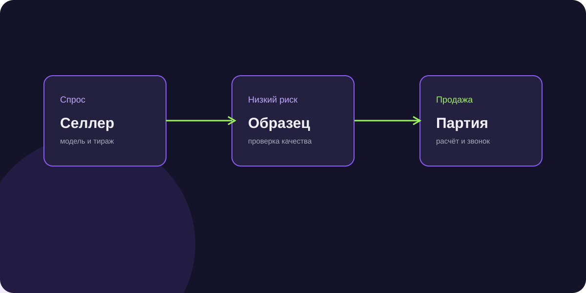

Оптовые продажи в Telegram: как выстроить поток заказов от дилеров и розницы
Оптовики устали от неудобных прайсов в Excel и долгих созвонов. Telegram стал главным рабочим столом закупщика. Разбираем построение оптовой воронки.

Короткий ответ
Оптовые продажи в Telegram строятся через связку экспертного канала с актуальными остатками склада и интерактивного Telegram Mini App или бота, где байеры могут в 2 клика запросить персональные цены под объем, скачать сертификаты и быстро отправить заказ прямо в 1C компании.
3 элемента идеального оптового Telegram-канала
- Видеообзоры реальных отгрузок со склада: доказательство наличия объемов и надежности упаковки.
- Еженедельная сводка дефицитных позиций: создание естественного ажиотажа перед повышением цен.
- Закрепленный пост с навигацией: ссылки на сертификаты, условия доставки и калькулятор партий.
Автоматизация сбора заявок через Telegram Mini App
Вместо пересылки тяжелых PDF байер открывает каталог прямо внутри Telegram: выбирает нужные артикулы, указывает количество паллет и видит персональную скидку.
Где брать контакты оптовых закупщиков для канала
Точечный парсинг отраслевых чатов, посевы в специализированных каналах для предпринимателей и прямой аутрич по базе юридических лиц из ЕГРЮЛ.
Частые вопросы по теме
Стоит ли публиковать оптовые цены в открытом канале?
Лучше публиковать базовую вилку цен, а точный оптовый прайс выдавать через бота после короткой квалификации (ИНН компании, формат магазина).
Как защитить канал от конкурентов?
Сделайте канал закрытым с приемом заявок через бота, запрашивающего карточку предприятия.
140 регулярных дилеров из Telegram за 3 месяца
Дистрибьютор упаковочных материалов перевел прием оптовых заказов в Telegram, увеличив повторные продажи постоянным клиентам на 31%.